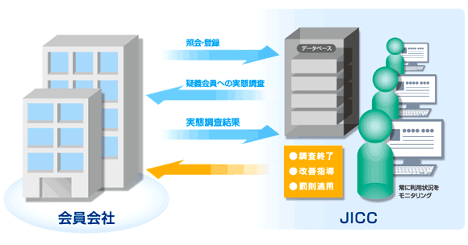

JICCについて
個人情報保護への取り組み
個人情報保護方針
当社は、クレジットやローンなど消費者信用を利用するお客様に係わる個人情報を日常業務において取り扱う上で、信用情報機関が消費者信用の円滑かつ健全な発展に重要な役割を果たす公共的使命と、個人情報がお客様のプライバシーに深い関わりを有することに鑑み、個人情報保護についての当社の方針を対外的に公表するものとして、この個人情報保護方針を定めました。当社のすべての役員及び従業者は、職位及び職務内容にかかわりなく、個人情報の保護を含む情報セキュリティを維持・向上するため、全社的なリスク管理態勢の下、この個人情報保護方針を遵守し、より適切な業務運営に努めてまいります。
- 1．法令等の遵守
- 当社は、「個人情報の保護に関する法律｣、「個人情報の保護に関する法律についてのガイドライン」、金融関連分野における各「個人情報保護に関するガイドライン」及びその関連するその他の法令等並びに契約上のセキュリティ要求事項を遵守します。
- 2．適法かつ適正な方法による取得
- 当社は、個人情報を適法かつ適正な方法により取得します。
- 3．利用目的の特定
- 当社は、個人情報の利用目的を特定し、その利用目的を達成するために必要な範囲で個人情報を利用し、それ以外の目的に利用しません。また、利用目的の達成に必要な範囲を超えた個人情報の取り扱いを行わないよう、適切な措置を講じます。
（当社の個人情報の利用目的）- （1）当社加盟会員及び提携する信用情報機関の会員への提供
- （2）信用情報データベースの管理、運用、保守
- 4．取り扱う範囲、項目、利用目的等の公表
- 当社は、取り扱う個人情報の範囲、項目、利用目的等を、本人が容易に知り得るよう公表します。
- 5．正確性及び最新性の確保
- 当社は、利用目的の達成に必要な範囲内において、個人情報を正確かつ最新の内容に保つよう努めます。
- 6．安全管理措置
- 当社は、個人情報への不正アクセス（サイバー攻撃含む）、個人情報の紛失、破壊、改竄、漏えい等のリスクに対して必要かつ適切な安全管理措置及び是正措置を講じます。
- 7．役員及び従業者の監督
- 当社は、個人情報の安全管理の徹底を図るため、役員及び従業者に対して、情報セキュリティの重要性を認識させるとともに、情報の適正な取り扱いを周知徹底し、これに必要な教育、研修を定期的に実施します。
- 8．委託先の監督
- 当社は、個人情報の取り扱いの全部または一部を外部に委託する場合には、十分な保護水準を充たした者を選定し、必要かつ適切な監督を行います。
（当社の主な委託業務）- （1）信用情報データベースの管理、運用、保守
- 9．開示請求に対する適切かつ迅速な対応
- 当社は、本人から保有個人データの開示を求められたときは、本人に対し、遅滞なく、当該保有個人データを開示します。
- 10．訂正、追加または削除の申出に対する適切かつ迅速な対応
- 当社は、本人から保有個人データの内容が事実でないという理由により当該保有個人データの内容の訂正、追加または削除を求められた場合には、遅滞なく必要な調査を行い、その結果に基づき、当該保有個人データの内容の訂正等を行います。
- 11．個人情報の取り扱いに関する苦情及び相談等に対する適切かつ迅速な対応
- 当社は、個人情報の取り扱いに関する苦情及び相談等に対し適切かつ迅速に対応します。
（お問い合わせ窓口）
ナビダイヤル：0570-055-955
（月曜日～金曜日 10:00～16:00、祝日・年末年始除く） - 12．個人情報保護マネジメントシステムの継続的改善
- 当社は、個人情報の保護を含む情報管理体制を整備し、情報セキュリティマネジメントシステム（ISO/IEC27001:2013）の認証を維持し、個人情報保護マネジメントシステムの継続的な改善に努めます。
平成21年4月1日制定
平成29年5月30日改定
株式会社日本信用情報機構
特定個人情報保護方針
当社は、特定個人情報の適正な取り扱いの確保のため、本方針を定め、個人情報保護方針を遵守するとともに、より適切な業務運営に努めてまいります。
- 1．法令等の遵守
- 当社は、「行政手続における特定の個人を識別するための番号の利用等に関する法律（いわゆるマイナンバー法）」、「特定個人情報の適正な取扱いに関するガイドライン（事業者編）」及び関連するその他の法令等（以下「法令等」といいます）を遵守します。
- 2．利用目的の制限
- 当社は、特定個人情報を法令等で定める以下の目的で利用します。
- （1）社員および社員の扶養親族等の個人番号関係事務
- （2）取引先等の報酬等の支払調書作成業務に係る個人番号関係事務
- 3．提供の求めの制限
- 当社は、法令等の定めにより特定個人情報の提供を求めることができる場合を除き、特定個人情報の提供を求めません。
- 4．提供の制限
- 当社は、特定個人情報を法令等で定める個人番号関係事務に必要な範囲以外には提供しません。
- 5．収集・保管の制限
- 当社は、利用目的以外の理由で特定個人情報を収集・保管しません。また、意図せず特定個人情報を取得した際は、速やかに返却・廃棄します。
- 6．安全管理措置
- 当社は、特定個人情報への不正アクセス、特定個人情報の紛失、破壊、改竄、漏えい等のリスクに対して必要かつ適切な安全管理措置を講じます。
- 7．役員及び社員の監督
- 当社は、特定個人情報の安全管理の徹底を図るため、役員及び社員に対して、情報セキュリティの重要性を認識させるとともに、情報の適正な取り扱いを周知徹底し、これに必要な教育、研修を定期的に実施します。
- 8．特定個人情報の取り扱いに関する苦情及び相談等に対する適切かつ迅速な対応
- 当社は、個人情報の取り扱いに関する苦情及び相談等に対し適切かつ迅速に対応します。
（お問い合わせ窓口）
ナビダイヤル：0570-055-955
（月曜日～金曜日 10:00～16:00、祝日・年末年始除く）
平成28年5月26日制定
株式会社日本信用情報機構
法令に基づく公表事項
- 事業者の名称
- 株式会社 日本信用情報機構
〒110-0014
東京都台東区北上野一丁目１０番１４号
住友不動産上野ビル５号館 - 個人情報の利用目的
-
- ・当社加盟会員及び提携する信用情報機関の会員への提供
- ・信用情報データベースの管理・運用・保守
- 委託を受けた個人情報の利用目的
- 情報処理サービスのシステム運用及びその管理
- 開示等の求めに応じる手続き
- 開示手続きについてはこちらからご案内をしております。
- JICCに対するご意見、ご要望、ご相談
- 0570-055-955（JICCサポートダイヤル）
オペレーター対応：月曜日から金曜日（祝日・年末年始除く）
10:00～16:00
開示手続き等は、音声ガイダンスで２４時間ご案内しております。
JICCでは、お問い合わせ等の内容を正しく把握するため、通話内容を録音させていただきますのでご了承ください。
ただし、録音は６ヵ月以内に消去いたします。
安全管理体制
JICCでは、保有する信用情報の安全管理を推進するために業務・システムの両方の側面からさまざまな安全管理措置を講じています。
- 個人データの安全管理に係る基本方針・取扱規程などの整備
-
- 1．個人データの安全管理に係る基本方針の整備
- 個人情報保護方針はこちらより。
- 2．個人データの安全管理に係る取扱規程の整備
- 情報管理規程などの規程・マニュアルを整備し、消費者および会員会社から収集した情報をルールに則り取り扱っております。
- 3．個人データの取扱状況の点検および監査に係る規程の整備
- 内部監査規程などに基づき、客観性および公平性を確保し、定期的に監査を実施しております。
- 4．外部委託に係る規程の整備
- 業務を外部委託する際は、外部委託管理規程に基づき委託先を選定し、個人情報保護、情報セキュリティの体制が適性であることを定期的に確認しております。
- 個人データの安全管理措置に係る実施体制の整備
-
1．組織的安全管理措置
- （1）個人データの管理責任者等の設置
- JICCの情報統括責任者は取締役以上の役員が担います。
また、各部門長が情報管理責任者として部門内の安全管理を推進しております。 - （2）就業規則などにおける安全管理措置の整備
- 社員として遵守するべき事項を明記し、違反者に対しては厳しい処分を定めております。
- （3）個人データの安全管理に係る取扱規程に従った運用
- 各種規程・マニュアルなどを整備し、各種管理台帳にて遵守状況の確認を行っております。
- （4）個人データの取扱状況を確認できる手段の整備
- 各部にて保有する情報（個人情報含む）を情報資産としてまとめ、保管方法・場所・期間などを明確にしております。
- （5）個人データの取扱状況の点検および監査体制の整備と実施
- 各部門ごとに毎月１回の点検、監査部による内部監査、外部の第三者による外部監査を実施し、重層的な監査体制にて取り組んでおります。
- （6）漏洩事案などに対応する体制の整備
- 緊急事態対応に関する規程・マニュアルなどを整備し、万が一の事態にも迅速に対応できる体制を整えております。
2．人的安全管理措置
- （1）従業者との個人データの非開示契約の締結
- 社員は、在職中はもちろん退職後においても業務上知り得た情報を漏洩することがないよう「誓約書」へ署名するとともに、退職時においても「誓約書」への署名を義務付けております。
- （2）従業者への安全管理措置の周知徹底、教育および訓練の実施
- 個人情報保護について常に正しい知識を身に付けるために継続的な教育を実施しております。
3．人的安全管理措置
- （1）個人データ処理施設の保護
- 信用情報データベースへのアクセス可能な端末は、入退室が制限された専用区画に設置しております。
- （2）盗難防止対策
- 会員会社との媒体授受は、データを暗号化し、媒体の所在を確認できる専用の輸送方法を採用しております。
- （3）機器・装置などの物理的な保護
- 会員会社から登録された信用情報は、各種安全対策基準を満たしたデータセンターにて厳重に管理しております。さらに、大地震などの自然災害発生時に信用情報を適切に保護できるようにバックアップセンターを設置しております。
- （4）個人データの利用者の識別および認証
- 信用情報データベースへのアクセスは、独自の認証方式によって照会する手段・場所・人を特定することで不正アクセスを防止しております。
- （5）個人データの漏洩・き損など防止策
- 通信方式には、独自の通信プロトコルを採用すると共にファイヤーウォールなどを設置し、データベースを含めコンピュータウィルスなど不正プログラムへの防御対策を実施しております。
- （6）個人データのアクセスの記録および分析
- アクセスログを取得し、不適切な利用を常時モニタリングしております。
4．従業員の監督
人的安全管理措置の他、以下の対策を実施しております。- ・電子メール監視
- ・インターネットのアクセス制限
- ・ビデオカメラによるオフィスフロアの監視
- ・オフィスへの持込制限(カメラ付き携帯電話・私用鞄）
5．委託先の監督
業務を外部委託する際は、委託先選定基準に則り、安全管理対策状況を確認し委託先を選定しております。特に、個人情報の取り扱いを委託する先については、立入り検査などを実施し、契約内容の遵守状況を確認しております。
会員管理の状況
ＪＩＣＣでは、会員会社が適正に信用情報を照会・登録し、消費者の返済・支払能力を確認する目的のみ信用情報を利用することを確保するために一定の資格要件および信用情報の取り扱いに関する規定を設けています。 また、加盟後においても利用状況のモニタリング、不適切利用に対する罰則適用までの厳格な運営規定を設け、信用情報の保護に努めています。
- 会員会社の入会資格と遵守事項
- 会員会社の入会資格と遵守事項はこちらより。
- 入会審査の体制
- 入会申込時においては、信用情報の適正利用・消費者保護を含めた安全管理体制の確認などを外部の有識者も入れた委員会などを設置し、厳格な入会資格審査を実施しています。
<審査の流れ>
- 入会審査前調査
- 加盟を希望する企業に対して、会社概要、個人情報保護体制、利用商品などの確認ができる書類をご提出いただき、その内容をＪＩＣＣ独自の方法により調査しています。
- 第一審査（資格審査委員会）
- 外部の有識者および常勤役員から構成される資格審査委員会にて、加盟を希望する企業が会員資格を満たしているかを厳正に審査しています。
- 最終審査（取締役会）
- 第一次審査の結果を踏まえて、ＪＩＣＣ取締役会にて最終審査を行い、加盟を希望する企業が会員資格を満たしていることを確認しています。
- 利用状況のモニタリング
- 加盟後においては、目的外利用などの規約違反が発生しないよう、会員会社の日々の利用状況について常にモニタリングを行っています。必要に応じてＪＩＣＣから、会員会社が信用情報を照会した消費者の方にご連絡を差し上げ、申込事実の確認等を行い、適正利用の確保に努めています。
また、信用情報の安全理措置が継続して維持されていることを実地調査などを通じて確認をしています。

![[アイコン]信用情報機関とは](../../images/about/img01_cntarea02.png)
![[アイコン]加盟会員について](../../images/about/img02_cntarea02.png)
![[アイコン]会社概要](../../images/about/img03_cntarea02.png)
![[アイコン]アクセスマップ](../../images/about/img04_cntarea02.png)
![[アイコン]統計情報](../../images/about/img05_cntarea02.png)
![[アイコン]コーポレートガバナンス](../../images/about/img06_cntarea02.png)